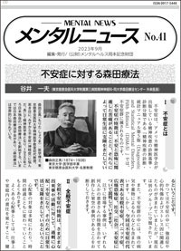
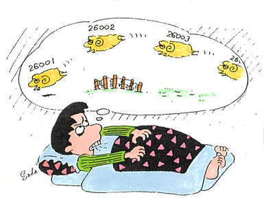
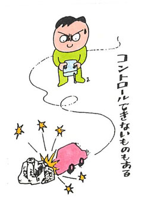
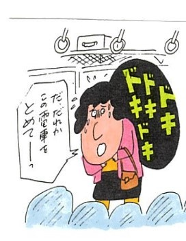
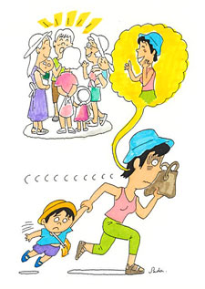

「不安症に対する森田療法」

谷井 一夫 （東京慈恵会医科大学附属第三病院精神神経科）
I .不安症とは
不安症は、アメリカ精神医学会が出版している精神疾患の診断基準・診断分類である「精神疾患の診断・統計マニュアル第5版（Diagnostic and Statistical Mental Disorders, Fifth Edition）（DSM-5）」では、不安症群に属されるものです。
不安症の特徴は、不安と恐怖に関連した苦痛があることと、それらによって日常生活に支障をきたしているということです。
かつては不安症の中に、強迫症や心的外傷およびストレス因に関連したものが含まれていましたが、現在は別のグループに分類されています。
また、不安症群の中には、体の病気や薬物によるものなども含まれています。しかし、今回は不安症の代表である全般不安症、パニック症、広場恐怖症、社交（社会）不安症について説明していきます。
以下に登場する事例は、いずれも何人かの患者さんの特徴を合わせて創作した架空の事例であることをお断りしておきます。
森田正馬（もりた・しょうま）：
医学博士、東京慈恵会医科大学精神医学教室初代教授。
若き日に、みずから不安症（神経症）に悩んだ。長じて精神医学者となり、1920年ごろ日本独自の「森田療法」を創始する。いまでは日本森田療法学会があり、「森田療法」は世界的に知られている。
Ⅱ．全般不安症
全般不安症の特徴は、さまざまな出来事や活動に対して、過剰に心配・不安になり、そのために日常生活に支障をきたしているということです。
心配事の対象は多岐にわたり、時間の経過とともに変わっていくこともよくあります。
よくある心配事としては、仕事上や家庭内の責任を果たすこと、健康、家計、家族の安全などがあります。
また、精神面のみならず、疲れやすさ、筋肉の緊張などの症状や発汗、頭のふらつき、動悸、めまいなどの自律神経症状が現われる人も多くいます。

【事例 48歳男性 Ａさん】
Ａさんの主な症状は、不安で落ち着かない、眠れないというものです。
Ａさんは元来、心配性の性格でした。学生時代は成績もよく、友人とも仲良く過ごしました。
大学卒業後は現在の会社に就職し、熱心に働き、30代前半で結婚しました。すぐに娘が生まれ、娘がかわいくて、かわいくて仕方なく、仕事よりも娘のことを優先するようになりました。
あるとき、中学生になった娘が、部活中に過呼吸状態となり、数日学校を休むということがありました。
そのことをきっかけに、「娘の出席が足りなくなってしまうのではないか」「このまま娘が不登校になったらどうしよう」などの不安が高まるようになりました。
次第に、寝る前に娘のことを考えているうちに寝つけなくなり、「このまま眠れなかったらどうしよう」「眠れなかったら仕事ができなくなって、職を失ったらどうしよう」というように、さまざまなことが不安になるようになりました。
仕事中も不安で落ち着つかず、頻繁に離席するようになり、来院しました。

【治療の経過】
（初診時）
治療者は、今までの経過を聞いた後に現在の日常生活について尋ねました。すると、Ａさんが、娘を心配するあまり、娘が寝るまで一緒に過ごしていることや、仕事以外の外出をしなくなっていたことが分かりました。
治療者は、「娘さんのことが、心配だったのですよね。それだけ娘さんが、大切と感じているということですよね。大切なご家族が病気になれば、誰でもとても心配になりますよね」と伝えました。
すると、Ａさんは、「そうですか。私だけが特別に不安なんだと思っていました」と答えました。
治療者が、「娘さんのことが心配で、娘さんばかりに注意が向いてしまって、ますます不安になってしまっていませんか？」と尋ねると、「本当、そのとおりです。仕事中も娘のことばかり考えてしまって…。どうしたらいいでしょう？」と聞かれました。
そこで、治療者は、「本当はどんな生活を送っていきたいのでしょう？」とＡさんに質問しました。
Ａさんは、「家族がみんな健康で、楽しく暮らしていきたいだけなんです。でも、今のままだと不安で眠れないし、仕事に集中できないし、このまま仕事を失うことになったらどうしよう…」と答えました。
そのため、治療者は、「職を失わないためにも、仕事中は、なんとか目の前のことに手をつけていきましょう。最初から『集中してやらなきゃ』ではなく、『心配だな…』と思いながらでも構いません。とりあえず、手をつけていくうちに気持ちも変わっていくかもしれませんよ」と伝えると、Ａさんは、「なんとか頑張ってみます」と答えました。
（2～4週後）
診察時は、Ａさんの仕事が急に忙しくなり、仕事に追われていたので不安を感じる暇がなかった、ということが語られました。
一方、自宅ですることがないと不安が強くなって、落ち着かないということが話題になりました。
そこで、治療者は、仕事中のＡさんは、不安を棚上げにして行動できていたという事実を一緒に確認し、「感情は放っておけば必ず変化していくものです。不安なときに、すぐにどうこうしようとせずに、そのままにしておきましょう。今、解決できないことは棚上げして、今、できること、目の前のことに力を注いでいきましょう」と助言しました。
（8～12週後）
「相変わらず不安になることもあるけれど、『今、目の前』をキーワードにして、なんとかやっています。娘も学校に行けているし、この歳で寝るまで一緒にいるのもどうかと考え、やめました。いつの間にか寝られるようにもなりました」と語りました。
治療者は、娘さんと距離をおけたことを称賛し、「だいぶ生活がもとに戻ってきましたね。お仕事以外でも、ご自身の好きな時間を過ごせるといいですね」と伝えました。
すると、「娘が生まれてからは、娘のためだけに過ごしてきたんです。昔は舞台が好きで、よく妻と観に行っていたんですよ」とＡさんは教えてくれました。そのため、治療者は再び観劇することを推奨しました。
（16～20週後）
Ａさんが、奥様と大好きな劇団の舞台を観に行き、とても楽しかったこと、不安になることもあるが、とらわれることはほとんどなくなったことが語られました。
その後も、生活や環境が変化するたびに不安が強くなることはみられました。
それに対して、治療者は、「不安をコントロールすることをいったんそのままにしておき、Ａさんの本来の望みである家族と健康に楽しく過ごしていくこと」に繰り返し触れていきました。
そして治療後半では、Ａさんの「何事も完全でなければ嫌になって、放りだしてしまう」といった「全」か「無」かの強迫的なスタイルが話題となり、修正を促していきました。
数年が経過した現在でも、時折不安にはなるものの、大きく崩れることなく暮らしておられます。
【Ａさんのまとめ】
Ａさんは元来、心配性で、娘の過呼吸発作がきっかけで不安が強まりました。また、その不安から日常生活が窮屈になっていました。
治療者は、娘さんへの不安は自然であると、感情の普遍化を行いました。また、不安ばかりに目を向けていると、ますます不安になっていくこと〈注意と感覚の悪循環（注1）〉を伝え、感情は放っておけば自然に変化していくこと〈感情の法則（注2）〉を伝えました。
そして、不安をなくそうとするのではなく、自身の生活全般を充実させるよう建設的な行動に力を注ぐように助言しました。
結果的に、Ａさんは、不安をなくそうとしすぎていることや、本来やるべきことに手を出さないでいることが、ますます不安を強くしていることに気づき、行動を修正していきました。
Ａさんの行動が変化したために、不安にとらわれることが減り、回復に至りました。
（注1）
森田療法では、「注意と感覚の悪循環」のことを「精神交互作用」という。
森田正馬が唱えた精神交互作用とは、ある感覚に対して、注意を集中すれば、その感覚は鋭敏となり、この感覚鋭敏は、さらにますます注意をその方に固着させ、感覚と注意とがあいまって交互に作用して、感覚をますます強大にするという精神過程のことである。
（注2）
第一：感情は、そのままに放任し、またはその自然発動のままに従えば、その経過は山形の曲線をなし、ひと昇りひと降りして、ついに消失するものである。
第二：感情はその衝動を満足すれば、急に静まり消失するものである。
第三：感情は同一の感覚に慣れる従って、にぶくなり不感となるものである。
第四：感情は、その刺げきが継続して起こるときと、注意をこれに集注すときに、ますます強くなるものである。
第五：感情は、新しい経験によって、これを体得し、その反復によって、ますますその情を養成される。
文献：『神経質の本態と療法』森田正馬著（白揚社）
Ⅲ．パニック症、広場恐怖症
パニック症では、予期しないパニック発作が繰り返されます。
パニック発作とは、突然激しい恐怖・不快感の高まりが起こり、それらが数分以内でピークに達していくものです。その間に、動悸、発汗、息苦しさ、ふるえ、胸痛、窒息感、めまい、などの症状が起こります。
後に説明するパニック症を伴う広場恐怖症の場合の多くは、特定の場所や状況に反応して症状が現れます。 しかし、パニック症はなんでもないときに、突然、発作が起きる点が特徴です。
ほとんどの患者さんは、パニック発作が起きたときに「このまま死んでしまうのではないか」と死の恐怖を感じたり、「自分はどうかなってしまうのではないか」と自制心の喪失を恐れたりします。
また、発作を起こした後に「再び発作が起きるのではないか」と恐怖する「予期不安」に陥ることがしばしばあります。
広場恐怖症では、特定の「状況」や「認知」に対して、恐怖・不安を抱き、その場を回避したくなります。
特定の状況や認知は人によって異なり、たとえば、電車やバスなどの公共交通機関を利用するとき、あるいは広い場所にいるとき、囲まれた場所にいるとき、雑踏など公衆の場にいるとき、1人で外にいるときなどがあります。
多くの場合、パニック様の症状や当惑するような症状（たとえば、子供では迷子になること、高齢者では転倒の恐れや失禁の恐れなど）が起きたときに、脱出が困難で孤立無援となることを想像してしまい、それを怖がって、回避しようとします。
その恐怖・不安は、非常に強く、特定の状況や認知に遭遇したときは、ほとんど毎回起こります。そのために、日常生活に支障をきたしています。

【事例 33歳男性 Ｂさん】
Ｂさんの主な症状は、パニック発作とその予期不安から各駅停車の電車しか乗ることができないというものです。
元来、神経質な性格でしたが、学生時代は特に問題ありませんでした。大学卒業後に現在の会社に就職しました。
2ヵ月前に仕事上のトラブルが発生し、対処に追われ、非常に多忙であったときのことでした。ある日、出勤時の電車の中で強い不安感と動悸、呼吸困難感、手足のしびれ感が出現したためにすぐに電車を降り、近くの病院に救急受診しました。
しかし、病院を受診するころには症状はなく、さまざまな検査を受けましたが、異常はありませんでした。 その後、しばしば出勤する電車の中で同様の症状が出現するようになりました。
それ以来、また同じ発作が起こるのではないかという不安になり、各駅停車の電車しか乗れなくなったということで来院しました。
【治療の経過】
（初診時）
治療者は、Ｂさんの発作はパニック発作と呼ばれるものであることを伝えました。
パニック発作は、突然の不安と自律神経の急激な乱れが生じるものであるが、そのままにしておけば必ず自然に治まるものであることを説明しました。
Ｂさんは、「薬はあまり飲みたくない」とおっしゃいましたが、薬を味方にしながら、生活の立て直しを図ることがよくなるための近道であることと、改善すれば自然に薬も中止できることを伝えました。
そして、選択的セロトニン再取り込み阻害薬（Selective Serotonin Reuptake Inhibitor：SSRI）というタイプの抗うつ薬と抗不安薬の服用を開始しました。
（2週間後）
Ｂさんは、「大きなパニック発作はないものの、電車に乗ろうとすると軽い動悸がして、『また発作が起きるのではないか』と予期不安が高まり、その不安はどうしてもなくならなかったため、急行電車には乗らなかった」と話しました。
治療者は、
・不安を打ち消そうとすればするほど、不安は大きくなるという悪循環がある（注3）
・予期不安は「健康・安全の欲求」の裏返しで、パニック発作そのものではなく、あってよいもの
・不安がなくなってから、行動するのではなく、不安なままに場に踏み込む
以上のことを伝え、急行電車に乗るように促しました。
（4週間後）
Ｂさんはだいぶ安定していたため、そろそろ急行電車にも乗ってみようかと思うようになりました。
ある日、寝坊をして月に1回の大事な早朝会議に、遅刻しそうになりました。その際に無我夢中で急行に乗りましたが、乗った後は、会議に遅刻しないかという心配はしていましたが、発作のことはすっかり忘れていたそうです。
その体験の後は、急行にも乗れるようになっていったのでした。
その後、抗不安薬を徐々に減らしていき、3ヵ月後には中止しました。また、ＳＳＲＩも徐々に減らしていき、8か月後には中止しましたが、特に再発することもなく、治療も終結しました。
【Ｂさんのまとめ】
Ｂさんはパニック発作をおこし、その予期不安から急行電車に乗ることができなくなっていました。
治療者はパニック発作の特徴を伝えたうえで、薬物療法を補助的な手段として用いて、生活の立て直しをすることが治療目標であることをＢさんと共有しました。
薬物療法の効果もあり、発作はなくなっていきましたが、予期不安が生じて、なかなか急行電車に乗れないことが続きました。
また、Ｂさんは予期不安を「発作の始まり」であると早合点しているところがありました。さらに、この予期不安が生じると、急行電車に乗る状況を回避していたため、ますます不安が大きくなっていました。
そこで治療者は、「発作」と「予期不安」を分けること、予期不安はあってよいことを伝えていきました。
ある日、やむを得ず急行電車に乗り、発作を起こさなかった体験がきっかけとなり回復していきました。
（注3）
森田療法では、この状態のことを「思想の矛盾」という。
われわれの主観と客観、感情と知識、理解と体得とはしばしば矛盾するものである。それは、非論理的な感情の事実を合理的・論理的によって解決できるものであると誤って考え、それを解決しようとする知性の構えの誤りである。この矛盾を単純に気にし、心配し、不安がっている間は、神経質にまで発展する程度の精神交互作用は展開しないし、神経質の強迫観念も出現しない。しかし、これを知的に解決しようと構えると、精神の拮抗作用が生じ精神交互作用が発動してくる。
文献：森田療法 大原健士郎ほか著（世界保健通信社）
Ⅳ．社交（社会）不安症
社交（社会）不安症の人は、人々から注視される可能性のある場面に対して恐怖を抱き、そうした状況を回避しようとします。
たとえば、人前で食事をしたり、発言したりするなどの場面で、他人からの否定的な評価を恐れたり、相手に迷惑を掛けて、拒絶されることを恐怖したりします。
恐怖を感じるときには、顔が赤くなったり、手が振るえたり、発汗、言葉に詰まる、気分が悪くなる、頻尿になるなどの症状も現れます。
ＤＳＭ-5では、恐怖の対象が公衆の面前で話したり動作をしたりすることに限定されている場合は、「パフォーマンス限局型」と診断されます。

【事例 23歳女性 Ｃさん】
Ｃさんの主な症状は、対人緊張です。
もともと内気で大人しいほうでしたが、学生時代には大きな問題はありませんでした。大学卒業後、現在の職場に事務員として就職しました。
職場には同世代が少なく、気軽に話せる人がいませんでした。
そのような環境下で働く中、「周りの華やかな先輩たちに、地味でつまらない自分は、受け入れてもらえないのではないか」と考えるようになってきました。
そして、とうとう先輩たちに声をかけることができなくなりました。そのため、分からないことがあっても、先輩たちに聞くことができず、仕事に支障をきたすようになっていきました。
ついに、職場にいるだけでも緊張が高まるようになったため、来院しました。
【治療の経過】
（初診時）
Ｃさんは、「先輩たちは明るくて、おしゃれで、華やか。地味で内気で暗い自分は、とうてい受け入れてもらえないと思う」と話しました。
治療者は、Ｃさんの「受け入れてもらえないのでは」という悩みの裏側に「本当は先輩たちに受け入れられたい」という欲求があるのではないか、と伝えていきました。
また、先輩たちと比べて劣等感を感じてしまう気持ち自体は自然であること、周りの人がどう思うかを100％分かるのは不可能なことであることを伝えました。
そして、「受け入れられたい」という気持ちを大切にしつつ、まずは仕事に必要なことを手掛かりに、先輩に声をかけていくことを促しました。
（1～2ヵ月後）
「先輩に仕事で聞きたいことを1回だけ聞くことはできたけど、その後『楽しい話をしなくては』と思ったら、言葉が出てこなくて、気まずくなってしまい、また話しかけられなくなってしまった。そのせいで、仕事も分からないことだらけになってしまい、進まなくなってしまった」とＣさんは話しました。
そこで、治療者は、無理に楽しい話をしようとせずに、「今の自分」で「おっかなびっくり」「仕事に必要なことから」関わっていけばよいこと、今は仕事を覚えていくことにエネルギーを注いでいくことを伝えました。
（3～4か月後）
その後、徐々にではありますが、Ｃさんは仕事に必要なことから、先輩にも話しかけられるようになり、仕事にも少しずつ慣れていきました。
あるとき、先輩から昼食に誘われ、緊張しながらも一緒に食事をしていたら、先輩たちの面白い失敗談が聞けて、急に親近感を抱くようになったのでした。
その後、先輩たちと話す際に緊張はするものの、雑談も少しずつ出来るようになり、職場での緊張感も和らいでいきました。
Ｃさんの通院の間隔は徐々に空いていき、10か月後には治療が終結しました。
【Ｃさんのまとめ】
Ｃさんは先輩たちにどう思われるかということが気になって、緊張感が強くなり、話しかけることができなくなりました。
次第に職場にいるだけで緊張するようになってしまいました。
治療者は、「他者からどう思われるかは自分でコントロールできるものではないこと、他者がどう思っているのかを100％知ることができないこと」を伝えました。
そして、まずは仕事に必要なことについて、緊張しながら先輩に話しかけること、対人関係を作ろうとすることよりは仕事にエネルギーを注ぐことを促しました。
Ｃさんは仕事に必要な会話を手がかりに、徐々に先輩とも話せるようになり、職場での緊張感も和らいで、生き生きと働くようになりました。